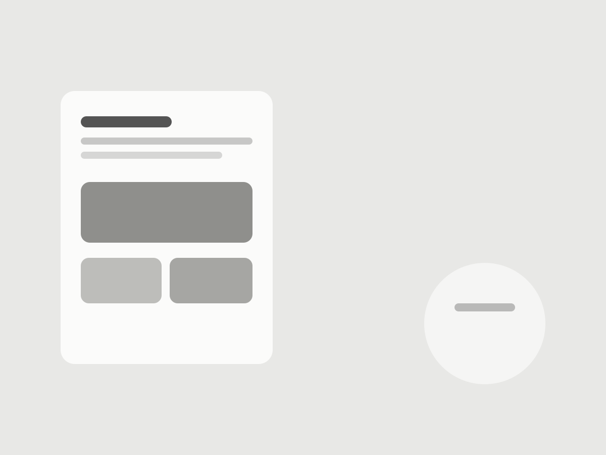

SpareBank 1 · Lead Designer
Making it easier to secure a financing certificate
A financing certificate gives people certainty about how much they can borrow before bidding on a home. It is also an important entry point into the bank’s home-loan journey.

The existing flow asked for more information than customers needed to provide at that stage, contained steps that did not match their expectations, and started from an outdated mobile experience.
I worked with the team to simplify the journey and test which changes actually helped more people progress, while improving lead quality for the bank.

Questioning what the flow actually needed
Research and comparison with similar services from other banks showed that SpareBank 1 was asking customers for more information than necessary.
Some fields and steps existed because they had historically been part of the process, not because they were essential to the financing decision.
The team reviewed the journey around a simpler question:
What information is actually needed for the customer to progress?
Steps that did not correspond with customer expectations were removed. Unnecessary information requirements were reduced, creating a shorter path through the application.

Creating a clearer start in mobile banking
The starting point for the financing-certificate journey was also redesigned.
An outdated component was replaced with a more contemporary treatment aligned with the bank’s identity and optimised for the mobile-banking environment.
Content hierarchy, component placement and interaction were treated as part of the conversion funnel rather than as a visual refresh.

Letting evidence decide what stayed
The flow was refined through repeated user testing and A/B testing.
Fields, steps, content, sequence and interface elements were changed and measured against customer behaviour.
This made it possible to distinguish between elements that were genuinely helping customers progress and those that were adding friction.
Qualitative testing helped explain where the journey conflicted with user expectations. Conversion data showed whether the proposed changes improved actual behaviour.

The process continued across multiple iterations rather than ending with a single redesign.
Result
The redesigned financing-certificate journey reduced unnecessary steps and information requirements, improved the mobile experience and created a clearer route into the bank’s home-loan process.
Lead quality improved alongside conversion.
The iterative work resulted in more than 20% improvement in home-loan conversion.